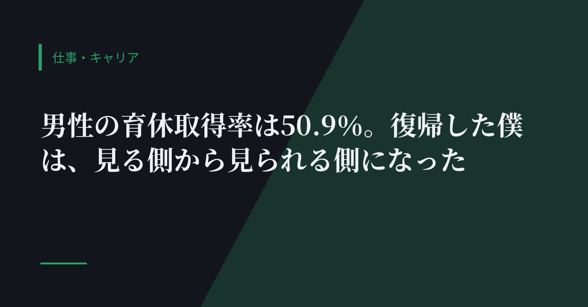

仕事・キャリア男性の育休取得率は50.9％。復帰した僕は、見る側から見られる側になった
育休が明けて席に戻った日、同じ職場なのに見える景色が違っていた。部屋も人も変わっていない。変わったのは、僕の立ち位置だった。
取得率は半数を超えた。ただ数字は戻ったあとを教えない
厚生労働省の雇用均等基本調査によると、男性の育児休業取得率は令和7年度に50.9％となり、前年度の40.5％から10.4ポイント上がった。取れる人が半数を超えたことになる。僕も育休を挟んだ一人だ。
ただ、この数字が示すのは「取れたか」までである。戻ったあとの職場で自分がどう見られ、どう扱われるかは、統計には載っていない。僕が考え込んだのは、取得そのものより、戻ってからの数か月だった。
見る側にいた頃の僕は、見られる意識が薄かった
育休の前、僕は後輩を見る側にいた。もともと後輩の育成が好きで、新人が多く入った時期は楽しんでやっていた。教える、任せる、様子を見る。主語はいつも自分で、自分が見られているという意識はほとんどなかった。
戻ってからは、それが逆になった。在宅の日があり、子どもの都合で予定が動くこともある。周囲の目に入るのは、成果より先に「いる時間」と「いない時間」だった。評価や言葉が自分に向かってくる側に回って、初めてその居心地が分かった。
たとえば、会議で話す場面が減った。決まった話の共有だけが回ってくる日もある。悪意があるわけではなく、不在の期間を埋めた体制の中に、戻った人の席がまだ用意されていないだけだ。頭では分かっていても、実際に座ってみると小さな疎外感として積もっていく。
立場が変わって、分かってしまったこと
以前、職場で調子を崩した後輩がいた。当時の僕は、仕事量や相性の問題として見ていた。見られる側に回ってから、人は業務量だけでなく、日々の小さな言葉や反応の積み重ねで削られるのだと、体感として理解できた。
僕は年齢的にも耐えられる。だが若手が同じ場所にいたら、同じようには耐えられないだろうと思った。これは誰かを責める話ではない。構造の話だ。業務量が多くない部署でも、調整や事務が多く、人の入れ替わりが少ないと、特定の言動が逃げ場なく届いてしまう。
見る側に戻る日が来たら、今度は忘れないでいたい。言葉をかけるときは、相手が見られる側にいることを前提にする。育成が好きだった頃の僕に足りなかったのは、たぶんその視点だった。
辞めない理由と、それでも動いた理由
僕は辞めるつもりはない。在宅ができて、家族との時間も取れる。この条件を手放す理由は、いまのところない。
一方で、環境は自分で選べない部分がある。会社都合の退職や早期退職の枠が出たときに備えて、実際に転職活動もした。技術面談まで進んだ会社もあり、電気系設備の経験には手応えがあった。辞めない理由と、動いた理由は両立する。
育休の数字は50％を超えた。次に問われるのは、戻った人がどんな席に座るかだと、僕は思っている。
この記事は note にも掲載しています。